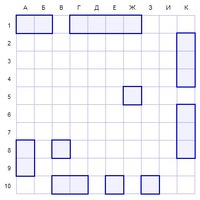
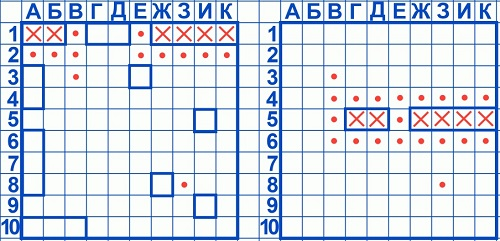

Игра "Морской бой" существует примерно столько же, сколько существуют сами корабли. В него играли тысячилетиями, начиная от возлежащих за философскими беседами греков и заканчивая скучающими на парах студентами. Поколения разумного населения планеты раз за разом садится за квадратное поле, чтобы испытать удачу или доказать противнику, что его стратегия успешнее его! Мы уверены, что большинству людей. когда-либо выходивших за пределы четырёх стен, известны правила, однако обызательно их напомним!
Ваша армада и фронт боевых действий
Прежде всего, будущий адмирал, стоит уяснить, что Ваши силы не безграничны, фронт растянуть не получится, а резерв вообще потерялся по пути. Проще говоря, играть придётся ограниченным количеством кораблей. В Вашем распоряжении имеется 1 четырёхпалубный линкор, два трёхпалубных эсминца, 3 двухпалубных канонерки и 4 однопалубных лодки. Поле для сражения представляет собой таблицу 10 на 10 клеток.
Учтите, адмирал, что Ваши корабли не могут изгибаться, аки змеи подколодные. Каждое судно может располагаться на поле только вертикально или горизонтально! И да, помните, что сликом близко ставить корабли воспрещается, так что никакие два фрегата не могут касаться друг друга бортами!

Пример правильного размещения кораблей
Таким образом, необходимо выбрать оптимальную стратегию для размещения вашей армады, адмирал. Ну а теперь, когда каждый капитан знает, где его место, пора бы уже начать заварушку!
Всем батареям, ОГОНЬ!
Противники в сей морской баталии делают ходы по очереди, выбирая одну клетку на поле противника, чтобы сделать по ней выстрел. Если выстрел оказался успешным и один из кораблей был подбит (или вообще потоплен), то удачливый противник вправе сделать ещё ход. Так будет продолжаться, пока выстрел не попадёт в молоко (мимо, проще говоря). В последнем случае ход переходит ко второму игроку.

Пример жаркого боя (справа поле противника)
Стоит отметить, что как только корабль противника полностью потоплен, можно смело считать, что вокруг него судов нет, так как по правилам соприкасаться бортами они не могут. Это уменьшает количество доступных для выстрела клеток и увеличивает Ваши шансы, адмирал, на победу!
Адмирал за бортом!
К счастью (или сожалению), в данной игре не предусмотрен флагман, за потопление которого присуждается немедленная победа. Игра заканчивается только тогда, когда все корабли одного из игроков будут затоплены. Существует большое количство различных стратегий, позволяющих увеличить шансы на победу. Однако "Морской бой" был и остаётся игрой на удачу, так что даже новичок может выиграть профессионала. Играйте, мой адмирал, и попутного Вам ветра!